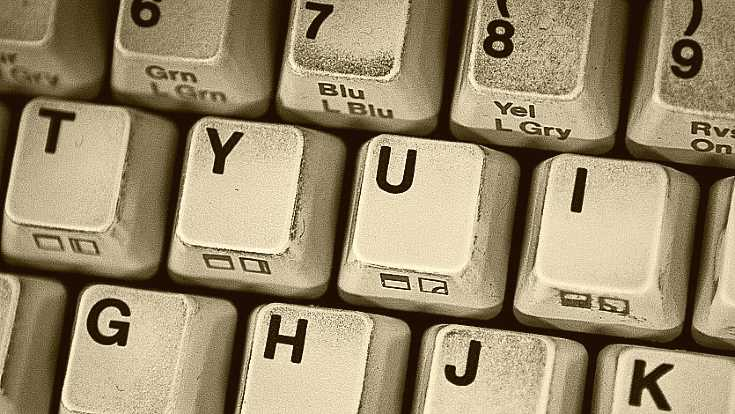
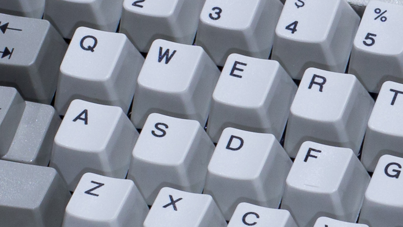

Comment nettoyer son clavier d'ordinateur ?
Les meilleurs claviers mécaniques sont de grande qualté. Grâce à leur conception solide, ils peuvent durer des années. Mais attention à ne pas réduire l'espérance de vie de votre clavier en négligeant leur entretien.
Nous allons voir comment bien nettoyer son clavier au quotidien, avec des conseils à mettre en place facilement. Nous verrons ensuite comment nettoyer votre clavier meca en profondeur.
Enfin nous n'oublions pas les utilisateurs d'ordinateur portable et nous verrons comment nettoyer le clavier de votre ordinateur portable.
Par ces temps de pandémie il est important de bien désinfecter son clavier. Retrouvez-donc nos conseils pour bien désinfecter votre clavier.
Comment nettoyer son clavier meca ?
 Pour un bon entretein d'un clavier gamer il va falloir vous concentrer à éliminer poussières, saletés et autres résidus. Nous allons voir comment nettoyer un clavier gamer, avec un entretien au quotidien. Nous verrons également comment entretenir votre clavier d'ordinateur portable. Pour ce faire nous allons une suivre une méthode bien précise.
Entretien quotidien de votre clavier.
Vous devez nettoyer votre clavier régulièrement. Il est important d'éviter l'accumulation de saletés, et c'est encore plus important si vous mangez à côté de votre clavier. Avec le temps, la poussière et la nourriture vont partiellement fusionner avec la plaque de métal peinte qui supporte chaque touche. C'est à la fois désagréable et peu pratique, car les particules doivent être éliminées par brossage une fois qu'elles sont fixées.
Etapes pour un nettoyage régulier
- Débrancher votre clavier
- Utiliser un aspirateur pour clavier, si vous utiliser un aspirateur classique attention à la pression qui ne doit pas être trop élevé sous peine d'arracher vos précieuses touches.
-
Nettoyer votre clavier avec un petit chiffon à microfibre légèrement
humide bien pour bien détacher les saletés.

- Vous pouvez maintenant le sécher
Comment nettoyer en profondeur votre clavier mécanique ?
Certaines saletés sont tenaces, se liant à la plaque malgré les nettoyages réguliers sous vide et les essuyages. De plus, une couche de gras que vous avez sous les doigts s'accumule progressivement sur les touches de votre clavier. Heureusement, il existe des méthodes éprouvées pour nettoyer votre clavier gamer.
Etapes pour un nettoyage en profondeur.
- Comme pour un nettoyage classique débranchez votre clavier
- Utilisez un extracteur de touches pour retirer les touches de votre clavier. La plupart des grosses touches sont stabilisées par des fils (espace, entrée, décalage, etc.), ce qui les rend plus difficiles à enlever. Si vous n'êtes pas à l'aise pour les enlever et les remettre en place, il est préférable de les essuyer avec un chiffon en microfibre légèrement humide.
-
Nettoyez les touches de touches de votre clavier mécanique avec du
liquide vaisselle.
Idéalement vous pouvez utiliser du nettoyant pour appareil dentaire. Placez les touches de votre clavier dans un récipient, couvrez les touches avec de l'eau chaude et placez deux comprimés dans le bain. Laissez tremper pendant au moins 6 heures, rincez abondamment et faites sécher les touches à l'air libre. Il faudra un certain temps pour que l'eau s'évapore des cavités en forme de plus (+) des touches. Le liquide vaisselle est un peu plus délicat à rincer, mais reste un très bon choix.
- Pendant que les touches trempent, utilisez une petite brosse à poils durs (ou un coton-tige sec, mais attention pourrait déposer quelques bouts de duvet indésirable) pour détacher les particules qui ont adhéré à la plaque. Évitez de placer les poils de la brosse près des tiges d'interrupteur. Les poils pourraient pousser la poussière en profondeur dans un switch, ce qui empêcherait l'aspiration.
- Passez l'aspirateur à fond avec un petit modèle portatif sans rouleau . S'il y a des débris que l'aspirateur ne peut pas ramasser, retournez le clavier et laissez-les tomber.
Comment nettoyer son clavier d'ordinateur portable ?
Comme les claviers des ordinateurs portables se trouvent au-dessus des composants électroniques de l'ordinateur, il faut faire très attention en les nettoyant. Voici les instructions qu'Apple donne pour le nettoyage d'un ordinateur portable.
- Débranchez l'ordinateur portable et laissez-le refroidir.
- Essuyez le clavier à l'aide d'un chiffon en microfibre propre et non pelucheux, légèrement humidifié avec de l'eau uniquement. Évitez d'introduire de l'humidité directement dans l'une des ouvertures. Ne vaporisez jamais d'eau directement sur le clavier.
- Pour enlever les débris entre les touches, vous pouvez utiliser une bombe d'air sec. Assurez-vous que la paille est bien fixée pour contrôler le flux d'air. Ne retournez pas la bombe d'air comprimé pendant la pulvérisation. Cela pourrait pulvériser du gaz propulseur, au lieu de l'air, sur le clavier.
- Apple recommande la technique suivante pour l'utilisation de l'air comprimé. Ouvrez l'ordinateur portable. Tenez-le de manière à ce que le clavier soit à un angle de 75 degrés, en le faisant légèrement basculer vers l'arrière. Vaporisez le clavier avec de l'air comprimé, en déplaçant la bombe d'air sec de gauche à droite. Maintenez l'extrémité de la paille à environ un demi-pouce du clavier pendant la pulvérisation.
- Tournez l'ordinateur portable vers la droite et pulvérisez à nouveau le clavier, de gauche à droite, de haut en bas. Ensuite, tournez l'ordinateur portable vers la gauche et pulvérisez, de gauche à droite, de haut en bas.
Comment désinfecter son clavier ?
Il est parfois nécessaire de désinfecter un clavier, en particulier lorsque vous utilisez un ordinateur public ou un ordinateur à utilisateurs multiples. Selon le site web d'Apple, utilisez les lingettes Lysol ou les lingettes désinfectantes Clorox pour faire ce travail. N'utilisez PAS de sprays désinfectants ou de lingettes contenant de l'eau de javel.
- Éteignez d'abord l'ordinateur, débranchez le cordon d'alimentation et retirez la batterie si vous nettoyez un clavier sans fil ou portable.
- Par de légers et doux coups, essuyez d'abord le clavier avec une lingette désinfectante. (Si une lingette est trop humide, pressez le liquide en excès avant de l'utiliser. Ne laissez pas le liquide de la lingette rester trop longtemps sur la zone). Essuyez à nouveau avec un chiffon humide, doux et non pelucheux, par exemple en microfibre.
- Séchez avec un autre chiffon doux et non pelucheux.
- Séchez avec un autre chiffon doux et non pelucheux.
Conclusion
Vous disposez maintenant d'un guide complet sur comment bien nettoyer votre clavier gamer ou votre clavier d'ordinateur portable.